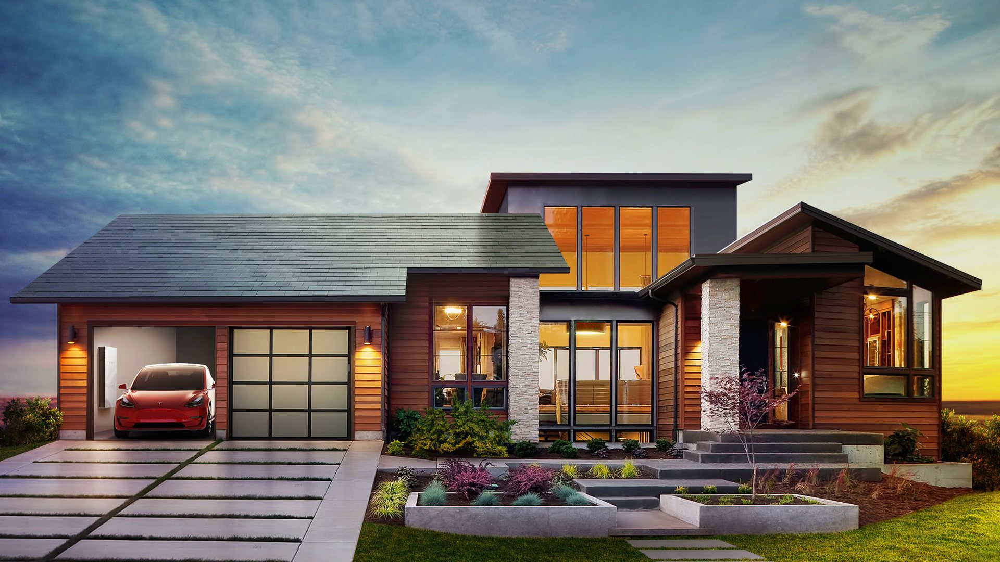
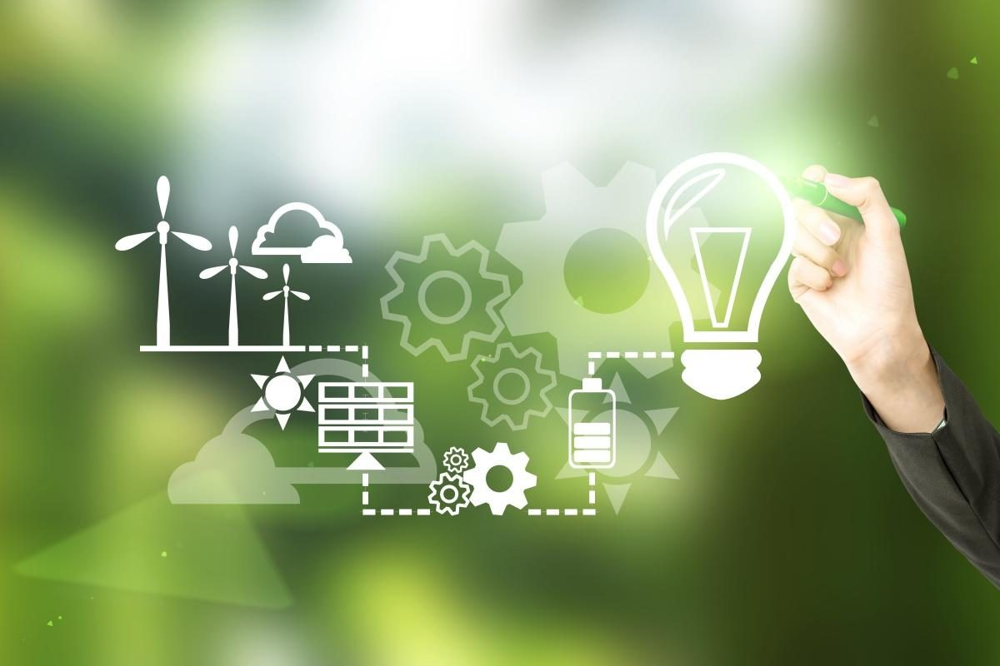
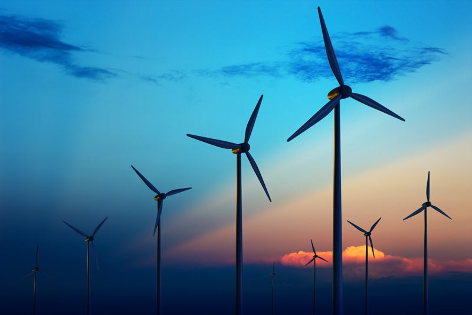
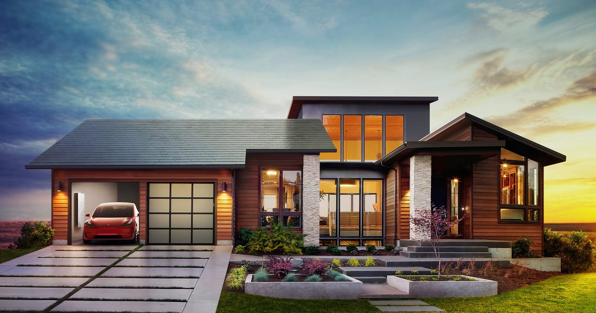
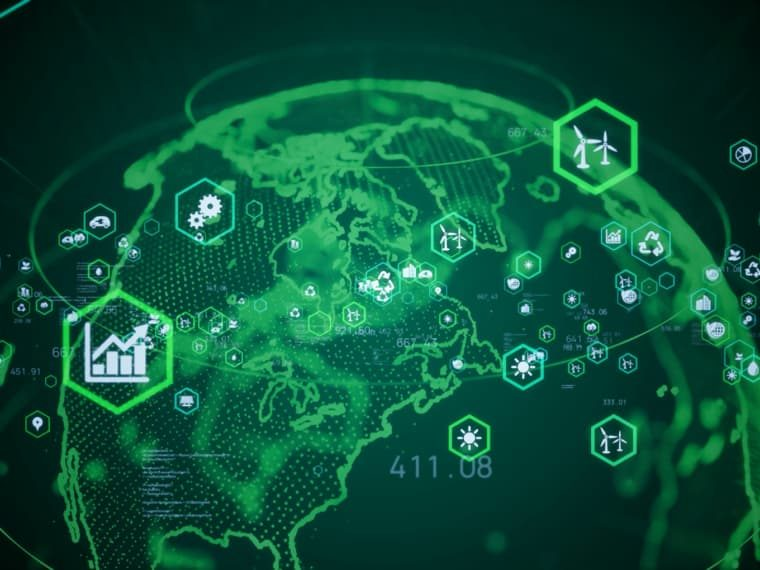
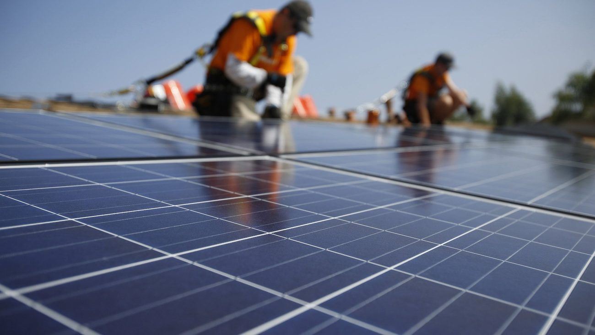
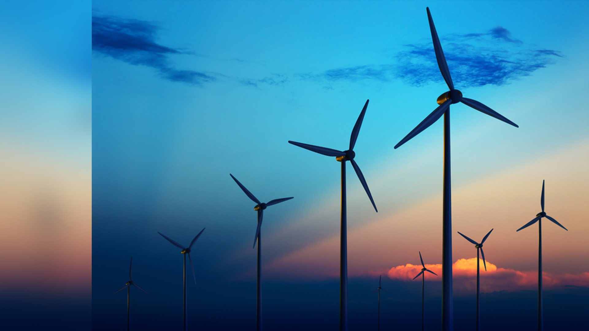

Alternative energy and energy equity
Cleaner power has many benefits. Who gets them, and who pays?
What's due
Quiz: US Energy Transition
The quiz covers today's topic. Read the assigned EPA reading before you take it.
- ✓I took the US Energy Transition quiz
Research topic selection and presentation outline
Pick the topic for your project presentation and write a short outline of it.
- ✓I picked my topic and wrote my outline
Key terms for today
A utility can save a kilowatt-hour with an efficiency program, or make one in a new power plant. How do the costs compare?
Today's big ideas
1 · Alternatives
What counts as alternative energy?
Compare renewable energy with the cheapest option of all: using less. See how a home can make, store and use clean power.
2 · Multiple benefits
What do we gain from clean energy?
Count the benefits to the power system, to air and health, and to the economy, not only the cost of a program.
3 · Energy justice
Who gets the benefits, and who pays?
Ask who is served, who has a say, and what happens to workers when the energy system changes.
Enter today's code
Your instructor shows a code on screen at the start of class. Checking in counts toward your participation grade.
What counts as alternative energy?

Quick question: a rooftop solar system on a house. Which kind is it?
Tap to check.
Two at once. It is renewable energy, and because it sits where the power is used, it is also clean distributed generation.
Source: US EPA (2018), section 1.1, "What are energy efficiency and renewable energy?"
Renewable energy in the EPA reading

Quick question: why does the state list matter?
Tap to check.
A state that counts more sources can reach its renewable target sooner, so two states with the same target may have very different clean-energy mixes.
Source: US EPA (2018), section 1.1. The quick-question answer is an inference from the definition, not a quote.
Energy efficiency is a bargain
The second bar is worked out from the EPA's statement that efficiency costs "about one-half to one-third" as much as new resources. It is not a price quoted in the reading.
Quick question: name one efficiency step that a school or home could take.
Tap for ideas.
Swap old bulbs for LEDs, seal and insulate buildings, or use appliances that need less power for the same job.
Source: US EPA (2018), section 1.2.1, citing an analysis of 20 state efficiency programs (LBNL, 2015; Lazard, 2017).
Make it, store it, use it

Decarbonization means phasing out carbon emissions. The energy transition is the shift to clean energy that gets us there.
Sources: US EPA (2018), sections 1.1 and 1.2.1 (distributed generation, storage). The electric-car point is general knowledge, not from the reading.
The energy transition in Australia
Source: ABC News report by Daniel Mercer. Open on YouTube. Figures are as stated in the video, not checked against the market operator's report.
Watch and discuss
Three kinds of benefit
A cheaper, steadier grid
Fewer new power plants and wires, fewer outages and less exposure to price spikes.
Cleaner air, healthier people
Less air pollution and fewer greenhouse gases from burning fossil fuels.
Savings, jobs and income
Lower energy bills, new jobs and more money spent locally.

Source: US EPA (2018), section 1.2, Figure I-2, "The multiple benefits of energy efficiency and renewable energy."
Primary or secondary grid benefit?
Source: US EPA (2018), section 1.2.1, "Primary" and "Secondary electricity system benefits."
Less burning, healthier air
Quick question: who gains first when a nearby power plant runs less?
Tap to think.
People who live near the plant breathe less of its pollution. Pollution can also travel far, so people downwind gain too.
Cuts credited to state renewable portfolio standards (NREL, 2016).
Source: US EPA (2018), section 1.2.2.
The economic benefits

Source: US EPA (2018), sections 1.2 and 1.2.3 (economic benefits and indirect effects).
Count the whole ledger
A state spends $10 million on an efficiency program. A report that counts only costs makes it look like a loss. Add the benefits one at a time.
Dollar amounts are made-up teaching numbers. The idea is from US EPA (2018), section 1.1.1: leaving benefits out "overstates the net cost of the program."
What is energy justice?
Energy justice means the benefits and the burdens of the energy system are shared fairly, and everyone has a voice in the decisions.
It applies the course idea of environmental justice: no group should carry an unfair share of pollution or risk.
Not in the EPA reading. This is a teaching framework built on the course glossary term Environmental Justice. The examples are illustrations, not data.
Who can get a home like this?
- What must a household have to put solar tiles and a battery on its home?
- Who might be left out, and why?
- What could a city or utility change so more households can join?
Some ideas to compare
Tap after you talk with a neighbor.
Households need a roof they own, money or credit up front, and a sunny roof. Renters and people with low incomes may be left out. Efficiency upgrades, rebates aimed at lower-income households, and renter-friendly programs can widen access.
Discussion slide. The ideas are teaching examples, not findings from the EPA reading.
A just transition
- Households and businesses with lower energy costs
- Workers in construction, manufacturing and services
- Communities with cleaner air
- Income, jobs and output can fall for fossil-fuel producers and their suppliers
- Utilities can lose revenue when customers use less electricity
Quick question: what would a fair plan do for a coal worker whose plant closes?
Tap to check.
Ideas: pay for retraining, help people move into the new clean-energy jobs, protect pensions, and bring workers and their town into the planning. These are examples to discuss, not policy from the EPA reading.
Source: US EPA (2018), sections 1.2.3 and 1.1 (indirect effects and sector transfers).
Nepal's floods: a cascade of risks
A state judges an efficiency program by its costs and its bill savings only. What does the EPA reading say about that?

Clean energy pays back in many ways. A fair transition makes sure everyone shares the gains.
- Using less energy is the cheapest alternative, and renewables, storage and local generation can do the rest.
- Count all the benefits: a steadier grid, healthier air, and savings and jobs.
- Ask who is served, who has a say, and who bears the costs, including workers.